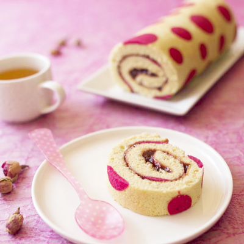

Les ingrédients
-
Pour la pâte à cigarette :
- 30g de beurre
- 30g de sucre glace
- 1 Blanc d’œuf
- 35g de farine
- Colorant rose Pour le biscuit roulé :
- 3 Gros œufs
- 100g de sucre en poudre
- 100g de farine
- 1/2 pot de confiture de fraise
La recette
- Fais fondre le beurre et laisse-le refroidir.
- Dans un bol, mélange le beurre fondu avec le sucre glace. Ajoute le blanc d’œuf puis la farine.
- Ajoute le colorant rose en poudre petit à petit de manière à obtenir la couleur que tu désires donc si tu veux une autre couleur, à toi de choisir un autre colorant !
- Mets la pâte à cigarette dans une poche à douille et laisse reposer 10 minutes au réfrigérateur.
- Sur un moule à génoise en silicone, réalise des points roses de différentes tailles.
- Mets le moule à roulé au réfrigérateur pendant 1 heure pour que la pâte à cigarette durcisse.
- Dans un saladier fouette 2 jaunes et 1 œuf entier avec la moitié du sucre.
- Ajoute la farine et mélange rapidement.
- Bats les 2 blancs en neige avec le sucre restant. Incorpore-les délicatement au reste de la préparation.
- Etale la pâte à biscuit sur le moule à génoise tout juste sorti du réfrigérateur et fais cuire 10 à 12 minutes dans le four préchauffé à 180°C.
- Dès la sortie du four retourne le gâteau une première fois sur une plaque ou un torchon puis une seconde fois sur un torchon et roule pour que le gâteau prenne la forme. Laisse refroidir.
- Déroule délicatement, étale la confiture de fraise et roule à nouveau.
- Place le roulé sur le plat de présentation et coupe les entames.
Pour faire la pâte à cigarette :
Pour faire le biscuit roulé :